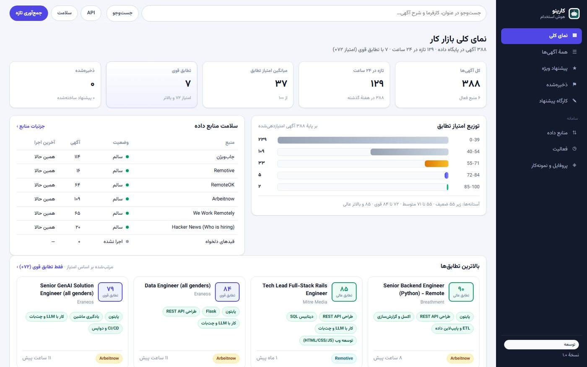

AI · Automation · Web
کارینو — پلتفرم هوش استخدام
یک پلتفرم مبتنی بر هوش مصنوعی برای سادهتر کردن فرایندهای مرتبط با استخدام و تحلیل اطلاعات شغلی.
- مسئله
- یک امتیاز ساده برای تطبیق شغلی کافی نیست؛ کاربر باید بداند چرا یک فرصت برای او مناسبتر است.
- راهکار
- ساخت کانکتور مستقل برای هر منبع و ایجاد خط لوله شامل دریافت، نرمالسازی، حذف تکراری، امتیازدهی و تولید پیشنهاد.
- نتیجه
- سیستمی که علاوه بر رتبهبندی، عوامل مؤثر بر امتیاز هر آگهی را نیز نمایش میدهد و خرابی یک منبع باعث توقف کل سیستم نمیشود.